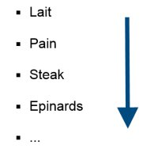
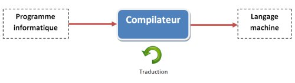
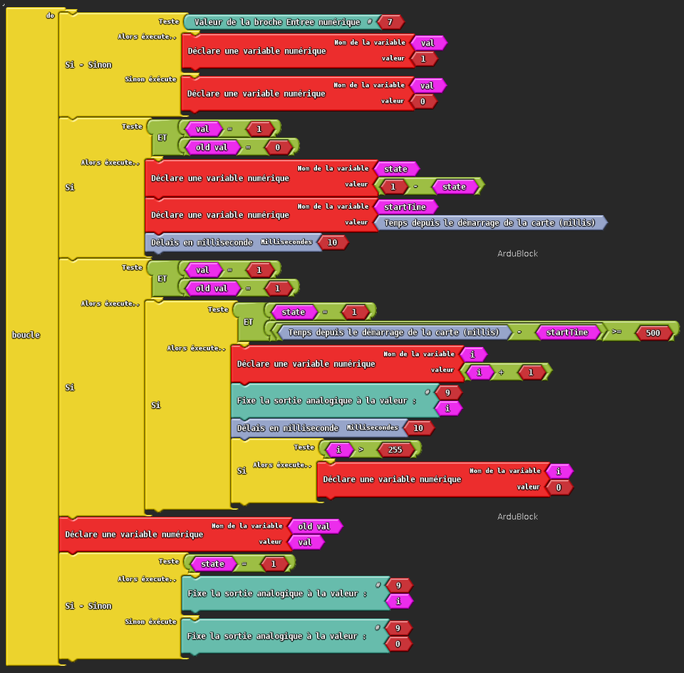
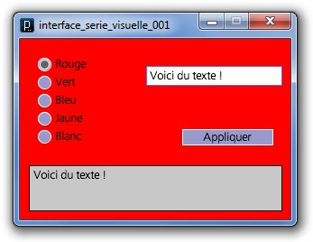
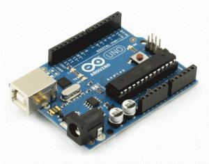
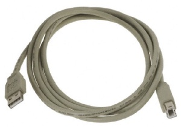
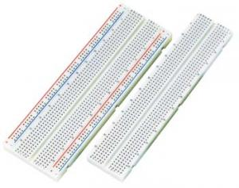
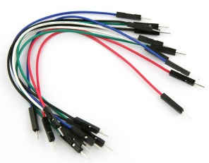
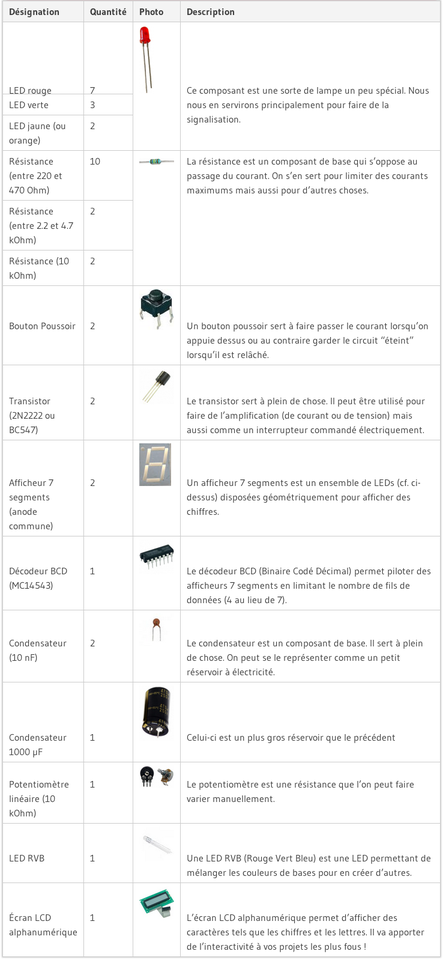

Comment faire de l’électronique en utilisant un langage de programmation ? La réponse, c’est le projet Arduino qui l’apporte. Vous allez le voir, celui-ci a été conçu pour être accessible à tous par sa simplicité. Mais il peut également être d’usage professionnel, tant les possibilités d’applications sont nombreuses.
Sommaire
Qu’est-ce que c’est ?
Une équipe de développeurs composée de Massimo Banzi, David Cuartielles, Tom Igoe, Gianluca Martino, David Mellis et Nicholas Zambetti a imaginé un projet répondant au doux nom de Arduino et mettant en œuvre une petite carte électronique programmable et un logiciel multiplateforme, qui puisse être accessible à tout un chacun dans le but de créer facilement des systèmes électroniques. Étant donné qu’il y a des débutants parmi nous, commençons par voir un peu le vocabulaire commun propre au domaine de l’électronique et de l’informatique.
Une carte électronique
Une carte électronique est un support plan, flexible ou rigide, généralement composé d' epoxy ou de fibre de verre. Elle possède des pistes électriques disposées sur une, deux ou plusieurs couches (en surface et/ou en interne) qui permettent la mise en relation électrique des composants électroniques. Chaque piste relie tel composant à tel autre, de façon à créer un système électronique qui fonctionne et qui réalise les opérations demandées.

Évidemment, tous les composants d’une carte électronique ne sont pas forcément reliés entre eux. Le câblage des composants suit un plan spécifique à chaque carte électronique, qui se nomme le schéma électronique .
Enfin, avant de passer à la réalisation d’un carte électronique, il est nécessaire de transformer le schéma électronique en un schéma de câblage , appelé typon .
Une fois que l’on a une carte électronique, on fait quoi avec ?
Eh bien une fois que la carte électronique est faite, nous n’avons plus qu’à la tester et l’utiliser ! Dans notre cas, avec Arduino, nous n’aurons pas à fabriquer la carte et encore moins à la concevoir. Elle existe, elle est déjà prête à l’emploi et nous n’avons plus qu’à l’utiliser. Et pour cela, vous allez devoir apprendre comment l’utiliser, ce que je vais vous montrer dans ce tutoriel.
Programmable ?
J’ai parlé de carte électronique programmable au début de ce chapitre. Mais savez-vous ce que c’est exactement ? Non pas vraiment. Alors voyons ensemble de quoi il s’agit. La carte Arduino est une carte électronique qui ne sait rien faire sans qu’on lui dise quoi faire . Pourquoi ? Eh bien c’est dû au fait qu’elle est programmable . Cela signifie qu’elle a besoin d’un programme pour fonctionner.
Un programme
Un programme est une liste d’instructions qui est exécutée par un système. Par exemple votre navigateur internet, avec lequel vous lisez probablement ce cours, est un programme. On peut analogiquement faire référence à une liste de course :

Chaque élément de cette liste est une instruction qui vous dit : "Va chercher le lait" ou "Va chercher le pain", etc. Dans un programme le fonctionnement est similaire :
- Attendre que l’utilisateur rentre un site internet à consulter
- Rechercher sur internet la page demandée
- Afficher le résultat
Tel pourrait être le fonctionnement de votre navigateur internet. Il va attendre que vous lui demandiez quelque chose pour aller le chercher et ensuite vous le montrer. Eh bien, tout aussi simplement que ces deux cas, une carte électronique programmable suit une liste d’instructions pour effectuer les opérations demandées par le programme.
Et on les trouves où ces programmes ? Comment on fait pour le mettre dans la carte ?

Des programmes, on peut en trouver de partout. Mais restons concentrés sur Arduino. Le programme que nous allons mettre dans la carte Arduino, c’est nous qui allons le réaliser. Oui, vous avez bien lu : nous allons programmer cette carte Arduino. Bien sûr, ce ne sera pas aussi simple qu’une liste de course, mais rassurez-vous cependant car nous allons réussir quand même ! Je vous montrerai comment y parvenir, puisque avant tout c’est un des objectifs de ce tutoriel. Voici un exemple de programme :
// définition de la broche 2 de la carte en tant que variable
const int led_rouge = 2;
// fonction d'initialisation de la carte
void setup()
{
// initialisation de la broche 2 comme étant une sortie
pinMode(led_rouge, OUTPUT);
}
void loop()
{
// allume la LED
digitalWrite(led_rouge, LOW);
// fait une pause de 1 seconde
delay(1000);
// éteint la LED
digitalWrite(led_rouge, HIGH);
// fait une pause de 1 seconde
delay(1000);
}
Vous le voyez comme moi, il s’agit de plusieurs lignes de texte, chacune étant une instruction. Ce langage ressemble à un véritable baragouin et ne semble vouloir a priori rien dire du tout… Et pourtant, c’est ce que nous saurons faire dans quelques temps ! Car nous apprendrons le langage informatique utilisé pour programmer la carte Arduino. Je ne m’attarde pas sur les détails, nous aurons amplement le temps de revenir sur le sujet plus tard. Pour répondre à la deuxième question, nous allons avoir besoin d’un logiciel…
Et un logiciel ?
Bon, je ne vais pas vous faire le détail de ce qu’est un logiciel, vous savez sans aucun doute de quoi il s’agit. Ce n’est autre qu’un programme informatique exécuté sur un ordinateur. Oui, pour programmer la carte Arduino, nous allons utiliser un programme ! En fait, il va s’agir d’un compilateur . Alors qu’est-ce que c’est exactement ?
Un compilateur
En informatique, ce terme désigne un logiciel qui est capable de traduire un langage informatique, ou plutôt un programme utilisant un langage informatique, vers un langage plus approprié afin que la machine qui va le lire puisse le comprendre. C’est un peu comme si le patron anglais d’une firme Chinoise donnait des instructions en anglais à un de ses ouvriers chinois. L’ouvrier ne pourrait comprendre ce qu’il doit faire. Pour cela, il a besoin que l’on traduise ce que lui dit son patron. C’est le rôle du traducteur . Le compilateur va donc traduire les instructions du programme précédent, écrites en langage texte, vers un langage dit "machine". Ce langage utilise uniquement des 0 et des 1. Nous verrons plus tard pourquoi. Cela pourrait être imagé de la façon suivante :

Donc, pour traduire le langage texte vers le langage machine (avec des 0 et des 1), nous aurons besoin de ce fameux compilateur. Et pas n’importe lequel, il faut celui qui soit capable de traduire le langage texte Arduino vers le langage machine Arduino . Et oui, sinon rien ne va fonctionner. Si vous mettez un traducteur Français vers Allemand entre notre patron anglais et son ouvrier chinois, ça ne fonctionnera pas mieux que s’ils discutaient directement. Vous comprenez ?
Et pourquoi on doit utiliser un traducteur, on peut pas simplement apprendre le langage machine directement ?
Comment dire… non ! Non parce que le langage machine est quasiment impossible à utiliser tel quel. Par exemple, comme il est composé de 0 et de 1, si je vous montre ça : "0001011100111010101000111", vous serez incapable, tout comme moi, de dire ce que cela signifie ! Et même si je vous dis que la suite "01000001" correspond à la lettre "A", je vous donne bien du courage pour coder rien qu’une phrase ! :P Bref, oubliez cette idée. C’est quand même plus facile d’utiliser des mots anglais (car oui nous allons être obligés de faire un peu d’anglais pour programmer, mais rien de bien compliqué rassurez-vous) que des suites de 0 et de 1. Vous ne croyez pas ?
Envoyer le programme dans la carte
Là, je ne vais pas vous dire grand chose car c’est l’environnement de développement qui va gérer tout ça. Nous n’aurons qu’à apprendre comment utiliser ce dernier et il se débrouillera tout seul pour envoyer le programme dans la carte. Nah ! Nous n’aurons donc qu’à créer le programme sans nous soucier du reste.
Pourquoi choisir Arduino ?
Que va-t-on faire avec ?
Avec Arduino, nous allons commencer par apprendre à programmer puis à utiliser des composants électroniques. En fin de compte, nous saurons créer des systèmes électroniques plus ou moins complexes. Mais ce n’est pas tout…
D’abord, Arduino c’est…
… une carte électronique programmable et un logiciel gratuit :
Mais aussi
- Un prix dérisoire étant donné l’étendue des applications possibles. On comptera 20 euros pour la carte que l’on va utiliser dans le cours. Le logiciel est fourni gratuitement !
- Une compatibilité sous toutes les plateformes, à savoir : Windows, Linux et Mac OS.
- Une communauté ultra développée ! Des milliers de forums d’entre-aide, de présentations de projets, de propositions de programmes et de bibliothèques, …
- Un site en anglais arduino.cc et un autre en français arduino.cc où vous trouverez tout de la référence Arduino, le matériel, des exemples d’utilisations, de l’aide pour débuter, des explications sur le logiciel et le matériel, etc.
-
Une liberté quasi absolue. Elle constitue en elle-même deux choses :
- Le logiciel : gratuit et open source, développé en Java, dont la simplicité d’utilisation relève du savoir cliquer sur la souris.
- Le matériel : cartes électroniques dont les schémas sont en libre circulation sur internet.
Cette liberté a une condition : le nom « Arduino » ne doit être employé que pour les cartes « officielles ». En somme, vous ne pouvez pas fabriquer votre propre carte sur le modèle Arduino et lui assigner le nom « Arduino ».
Et enfin, les applications possibles
Voici une liste non exhaustive des applications possibles réalisées grâce à Arduino :
- contrôler des appareils domestiques
- donner une "intelligence" à un robot
- réaliser des jeux de lumières
- permettre à un ordinateur de communiquer avec une carte électronique et différents capteurs
- télécommander un appareil mobile (modélisme)
- etc.
Il y a une infinité d’autres utilisations, vous pouvez simplement chercher sur votre moteur de recherche préféré ou sur Youtube le mot "Arduino" pour découvrir les milliers de projets réalisés avec !
Arduino dans ce tutoriel
Je vais quand même rappeler les principaux objectifs de ce cours. Nous allons avant tout découvrir Arduino dans son ensemble et apprendre à l’utiliser. Dans un premier temps, il s’agira de vous présenter ce qu’est Arduino, comment cela fonctionne globalement, pour ensuite entrer un peu plus dans le détail. Nous allons alors apprendre à utiliser le langage Arduino pour pouvoir créer des programmes très simples pour débuter. Nous enchaînerons ensuite avec les différentes fonctionnalités de la carte et ferons de petits TP qui vous permettront d’assimiler chaque notion abordée. Dès lors que vous serez plutôt à l’aise avec toutes les bases, nous nous rapprocherons de l’utilisation de composants électroniques plus ou moins complexes et finirons par un plus "gros" TP alliant la programmation et l’électronique. De quoi vous mettre de l’eau à la bouche ! :P
Arduino à l’école
Pédagogiquement, Arduino a aussi pas mal d’atouts. En effet, ses créateurs ont d’abord pensé ce projet pour qu’il soit facile d’accès. Il permet ainsi une très bonne approche de nombreux domaines et ainsi d’apprendre plein de choses assez simplement.
Des exemples
Voici quelques exemples d’utilisation possible :
- Simuler le fonctionnement des portes logiques
- Permettre l’utilisation de différents capteurs
- Mettre en œuvre et faciliter la compréhension d’un réseau informatique
-
Se servir d’Arduino pour créer des maquettes animées montrant le fonctionnement des collisions entres les plaques de la croûte terrestre, par exemple

- Donner un exemple concret d’utilisation des matrices avec un clavier alphanumérique 16 touches ou plus
- Être la base pour des élèves ayant un TPE à faire pour le BAC
- …
De plus, énormément de ressources et tutoriels (mais souvent en anglais) se trouvent sur internet, ce qui offre un autonomie particulière à l’apprenant.
Des outils existant :
Enfin, pour terminer de vous convaincre d’utiliser Arduino pour découvrir le monde merveilleux de l’embarqué, il existe différents outils qui peuvent être utilisés avec Arduino. Je vais en citer deux qui me semblent être les principaux : Ardublock est un outil qui se greffe au logiciel Arduino et qui permet de programmer avec des blocs. Chaque bloc est une instruction. On peut aisément faire des programmes avec cet outil et même des plutôt complexes. Cela permet par exemple de se concentrer sur ce que l’on doit faire avec Arduino et non se concentrer sur Arduino pour ensuite ce que l’on doit comprendre avec. Citons entre autre la simulation de porte logique : il vaut mieux créer des programmes rapidement sans connaitre le langage pour comprendre plus facilement comment fonctionne une porte logique. Et ce n’est qu’un exemple. Cela permet aussi à de jeunes enfants de commencer à programmer sans de trop grandes complications.

Processing est une autre plateforme en lien avec Arduino. Là il n’y a pas de matériel, uniquement un logiciel. Il permet entre autre de créer des interfaces graphiques avec un langage de programmation très similaire à celui d’Arduino. Par contre, cela demande un niveau un peu plus élevé pour pouvoir l’utiliser, même si cela reste simple dans l’ensemble.
Voilà un exemple de ce que j’avais réalisé avec Processing pour faire communiquer mon ordinateur avec ma carte Arduino :

J’espère avoir été assez convaincant afin que vous franchissiez le pas et ayez du plaisir à apprendre !

Les cartes Arduino
Le matériel que j’ai choisi d’utiliser tout au long de ce cours n’a pas un prix excessif et, je l’ai dit, tourne aux alentours de 25 € TTC. Il existe plusieurs magasins en ligne et en boutiques qui vendent des cartes Arduino. Je vais vous en donner quelques-uns, mais avant, il va falloir différencier certaines choses.
Les fabricants
Le projet Arduino est libre et les schémas des cartes circulent librement sur internet. D’où la mise en garde que je vais faire : il se peut qu’un illustre inconnu fabrique lui-même ses cartes Arduino. Cela n’a rien de mal en soi, s’il veut les commercialiser, il peut. Mais s’il est malhonnête, il peut vous vendre un produit défectueux. Bien sûr, tout le monde ne cherchera pas à vous arnaquer. Mais la prudence est de rigueur. Faites donc attention où vous achetez vos cartes .
Les types de cartes
Il y a trois types de cartes :
- Lesdites « officielles », qui sont fabriquées en Italie par le fabricant officiel : Smart Projects .
- Lesdits « compatibles », qui ne sont pas fabriqués par Smart Projects , mais qui sont totalement compatibles avec les Arduino officielles.
- Les « autres », fabriquées par diverses entreprises et commercialisées sous un nom différent (Freeduino, Seeduino, Femtoduino, …).
Les différentes cartes
Des cartes Arduino il en existe beaucoup ! Voyons celles qui nous intéressent… * Les cartes *Uno et Duemilanove **. Nous choisirons d’utiliser la carte portant le nom de « Uno » ou « Duemilanove ». Ces deux versions sont presque identiques.
* La carte *Mega **. La carte Arduino Mega est une autre carte qui offre toutes les fonctionnalités de la carte précédente, mais avec des fonctionnalités supplémentaires. On retrouve notamment un nombre d’entrées et de sorties plus important ainsi que plusieurs liaisons séries. Bien sûr, le prix est plus élevé : > 40 € !
Les autres cartes . Il existe encore beaucoup d’autres cartes, je vous laisse vous débrouiller pour trouver celle qui conviendra à vos projets. Cela dit, je vous conseil dans un premier temps d’utiliser la carte Arduino Uno ou Duemilanove d’une part car elle vous sera largement suffisante pour débuter et d’autre part car c’est avec celle-ci que nous présentons le cours.
Où acheter ?
Il existe sur le net une multitude de magasins (des vendeurs professionnels, des importateurs mais aussi des petits détaillants de quartier) qui proposent des cartes Arduino.
J’ai vu des cartes officielles "édition SMD/CMS". Ça à l’air bien aussi, c’est quoi la différence ? Je peux m’en servir ?
Il n’y a pas de différence ! Enfin presque… "SMD" signifie Surface Mount Device , en français on appelle ça des "CMS" pour Composants Montés en Surface . Ces composants sont soudés directement sur le cuivre de la carte, il ne la traverse pas comme les autres. Pour les cartes Arduino, on retrouve le composant principal en édition SMD dans ces cartes. La carte est donc la même, aucune différence pour le tuto. Les composants sont les mêmes, seule l’allure "physique" est différente. Par exemple, ci-dessus la "Mega" est en SMD et la Uno est "classique".
Liste d’achat
Tout au long du cours, nous allons utiliser du matériel en supplément de la carte. Rassurez-vous le prix est bien moindre. Je vous donne cette liste, cela vous évitera d’acheter en plusieurs fois. Vous allez devoir me croire sur parole sur leur intérêt. Nous découvrirons comment chaque composant fonctionne et comment les utiliser tout au long du tutoriel.
Attention, cette liste ne contient que les composants en quantités minimales strictes. Libre à vous de prendre plus de LED et de résistances par exemple (au cas où vous en perdriez ou détruisiez…). Pour ce qui est des prix, j’ai regardé sur différents sites grand public (donc pas Farnell par exemple), ils peuvent donc paraître plus élevés que la normale dans la mesure où ces sites amortissent moins sur des ventes à des clients fidèles qui prennent tout en grande quantité…
Avant que j’oublie, quatre éléments n’apparaîtront pas dans la liste et sont indispensables :
| Une Arduino Uno ou Duemilanove | Un câble USB A mâle/B mâle |
|---|---|
|  |  |
| Une BreadBoard (plaque d’essai) | Un lot de fils pour brancher le tout ! |
|---|---|
|  |  |
Liste Globale
Voici donc la liste du matériel nécessaire pour suivre le cours. Libre à vous de tout acheter ou non.

Les revendeurs
De nombreux revendeurs existent sur internet, allant du très professionnel avec un grand choix au petit détaillant de quartier sans oublier les grands importateurs chinois aux tarifs imbattables si vous savez être patient.
Les kits
Enfin, il existe des kits tout prêts chez certains revendeurs. Nous n’en conseillerons aucun pour plusieurs raisons. Tout d’abord, pour ne pas faire trop de publicité et rester conforme avec la charte du site. Ensuite, car il est difficile de trouver un kit "complet". Ils ont tous des avantages et des inconvénients mais aucun (au moment de la publication de ces lignes) ne propose absolument tous les composants que nous allons utiliser. Nous ne voulons donc pas que vous reveniez vous plaindre sur les forums car nous vous aurions fait dépenser votre argent inutilement !
Cela étant dit, merci de ne pas nous spammer de MP pour que l’on donne notre avis sur tel ou tel kit ! Usez des forums pour cela, il y a toujours quelqu’un qui sera là pour vous aider. Et puis nous n’avons pas les moyens de tous les acheter et tester leur qualité !